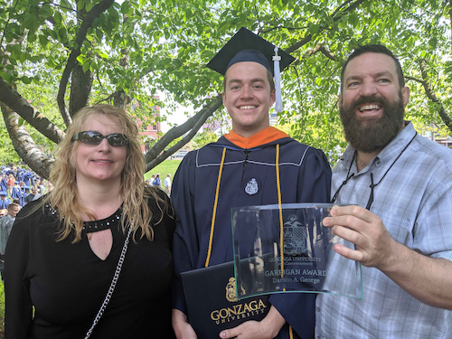
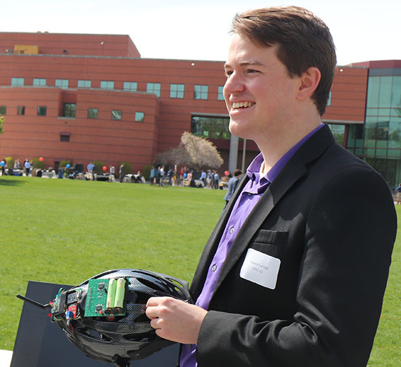

| March 23, 2021 |
Won the NSF GRFPI was awarded the National Science Foundation's Graduate Research Fellowship! What an amazing honor! Here's a brief OSU article about OSU students and alumni who received the award. You can also see the list of awardees for 2021 here. |
|
| August 30, 2019 |
Started at Oregon StateJoined the Information Processing Group under the lead of Dr. V John Mathews. I can't wait to start researching machine learning signal decoders for neural prostheses for amputees and quadriplegics! |
|
| May 12, 2019 |
GraduationGraduated top of my class from Gonzaga University with a BS in Computer Engineering! Gonzaga News Story |

My parents and I after graduation with my
Garrigan Award for highest GPA!
|
| May 1, 2019 |
Senior Design Exposition DayShowed off our Smart Helmet to the school during a fun day of demos and presentations! Won 2nd place for best project out of the ~60 teams in the engineering school! |

Me, showing off the Smart Helmet on Expo
Day.
|
| April 8, 2019 |
Passed the FEPassed the Washington State Computer Engineering FE Exam. |
|
| April 4, 2019 |
OSU AcceptanceAccepted admission to the Oregon State Computer Science Graduate School as a PhD candidate. |